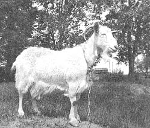

Eight years ago we had to make a decision: would we sell our little farm in northeast Montana . . . or could we do a turnabout and somehow learn to operate the place successfully?
For years we'd been losing money. Our animals were always sick, we were sick and-between doctor and hospital bills-we were going deeper into debt every year.
Our health was so poor that we were having our cattle boarded out during the winter months to save us the work of hauling and feeding hay. This arrangement seemed economical except for the fact that we lost the manure we needed for our pastures. Of course, we bought commercial fertilizers to take the place of the manure . . . or so we thought! After a few years of the commercial fertilizer treatment, however, we found that our pasture would no longer absorb moisture. The ground was as hard as concrete and no amount of water would penetrate it.
Our garden and lawn was much the same story. We'd used commercial fertilizers on them and what few plants did grow there were soon devoured by insects. Naturally, we bought insecticides and sprayed everything-even livestock-only to find the bugs still flourishing. The grasshoppers took everything in the garden . . . I mean they ate the leaves from every plant! I sprayed with everything our local stores, county agent or anyone else would recommend. It never even slowed the pests down.
The insecticides sure got the birds, though! Each time we mowed the lawn we'd find dead, dried-up feathery corpses. Our place had once been a bird haven . . . but now the meadowlarks, robins and all the others were gone. Even the formerly-abundant earthworms were impossible to find. It seems that we had cut off our nose to spite our face.
Then one day my aunt and uncle dropped by to pick a few beans. Even though I'd just sprayed the garden the day before and the directions on the insecticide container said to wait three days before harvesting treated produce, my aunt decided to pick beans anyway. And she did . . . while my uncle said, "Go ahead and poison us!"
That simple statement really woke me up. Maybe it was more true than my uncle knew! After all, I'd gotten a respiratory infection every time I'd sprayed that blasted garden and I'd also been awful sick each time we'd sprayed the livestock. Were we, indeed, poisoning ourselves?
That same summer our daughter was raising a 4-H steer which she'd borrowed $100 to feed. We certainly wanted to give that animal the best possible care so we asked the county agent how to keep flies off the steer. The agent told us to use DDT. . . even though that pesticide had already been banned for use on meat animals! Well, we certainly didn't take a chance on having the steer's meat condemned, so we hung up old-fashioned, sticky fly ribbons in his pen instead.
That was the beginning. Since then, we've moved steadily toward more natural ways of operating our homestead. For instance, our son was given some bantams and we soon noticed that the small, somewhat wild birds would fly high into the air to catch insects. We now have a flock of 25 of the little chickens and they keep our garden and yard almost completely bug-free.
We've found that the bantys seem to know when the nematodes (threadlike worms that feed on the roots of plants) are getting out of control and the birds will scratch really deep to get at these troublemakers. I even take a shovel and help them if the ground is too hard for the little chickens to do the job by themselves.
Cattle grubs used to be a big problem for us even though we regularly treated our livestock for these pests. Since we've had the bantams we haven't found a single grub . . . even though we no longer use a control treatment at all. The bantys, which are always in the corral and pastures, must be the control.
We find that the tiny chickens harm very little of our garden fare but we do keep them locked up when the tomatoes are ripening. The birds require no supplemental feed at all when we allow them to roam freely outdoors and their eggs more than pay for their keep when we fasten them in. Our introduction to bantams, then, took us a long way down the road toward a happier and healthier homestead.
I had read somewhere that healthy soil produces healthy plants and that healthy plants are not bothered by disease or insects. The statement made sense but sounded a little farfetched too. The fly ribbons and bantams were certainly working, however, and-when you're on the bottom-there's only one way to go . . . up! We decided to give the natural farming and gardening-or "organic"-methods a good try.
We decided, first of all, that our soil was not really "living" at all. The only signs of life it contained were cutworms and wireworms . . . things that actually destroyed life. The dirt needed massive doses of living matter.
Instead of burning our leaves, we bedded the pig (that would later go into the deepfreeze) with them. We gave him a huge amount of the leaves, in fact, and he greatly enjoyed making and remaking a bed in them. The goats were bedded with leaves too and, of course, they ate many of them. We didn't mind . . . we knew that their waste would also make good fertilizer.
We soon found that our tiller did a fair job of working the soiled leaves and animal manure into the garden . . . but not the lawn. Trying to grind such material into small enough particles to mix with the soil was a back-breaking job so, reluctantly, we bought a shredder for over $100. It seemed like a great amount of money at the time but I've since ground about 10 tons of natural fertilizer a year with the machine for six years now and we've spent a total of only $15 maintaining the shredder. It's been a very economical machine.
Our shredder is built like a hammer mill and I'm sure that any small hammer mill would do just as good a job grinding goat and cow manure, hay, straw and leaves into natural fertilizer for direct application on a lawn or garden. Nitrogen-rich horse and chicken manure presents another problem, however. Both are too "hot" and full of weed seed to use directly on growing plants and they gave us less than satisfactory results . . . until we discovered composting.
Compost, the dictionary says, is a mixture of decomposing vegetation, manure and other plant and animal waste which is used for fertilizing the soil. I would add that the composting process heats the collected wastes to such a degree that all weed seeds and harmful insects are destroyed. Also, to make the very richest natural fertilizer, the right proportions-1/3 manure to 2/3 vegetable matter-must be used.
Any plant or animal material will decompose naturally, though. Just stack it up, keep it damp enough to heat and turn it every third day if you're trying to make the process as rapid as possible. The turning and mixing keeps all the ingredients digesting at the same speed and prevents the pile from heating itself to ashes in one spot while weed seeds may still be living in another. Properly made, compost has no bad odor or flies and other insects around it while it's working. Finished, the natural fertilizer smells like freshly plowed, virgin soil.
Although it's not at all necessary, I like to shred the material I add to our compost pile. Shredded matter breaks down faster and can be completely processed and ready to apply to the soil in only two weeks.
We use everything-and I do mean everything!-that is or once was living in our compost. Nut shells, small bones, all fruit and vegetable wastes, hair, feathers, wasted hay, grain, straw and any weeds we can find. We even added a couple sacks of wormy flour one time before the worms had a chancre to invade the house.
Our family fills an ice cream bucket with garbage nearly every day. That's 365 gallons of compost ingredients each year from only four people! By recycling these wastes we get a rich, natural fertilizer for free (thus saving dollars we used to spend for chemical substitutes), save ourselves the trouble and expense of hauling the household garbage to the dump and we fight pollution at the same time. The garbage barrel doesn't have flies around it anymore, either, since all that goes into the container is plastic, glass and metal.
We spread compost on the garden as a mulch because it preserves moisture (an important consideration here in northeast Montana), smothers weeds and-naturally-acts as a rich fertilizer. We put our homemade compost on as the plants come up and keep adding it to a depth of six inches. I also till the natural plant food in to aerate the soil and feed the earthworms the ear every fall.
Once upon a time we burned all our old old cotton, wool and leather clothes but now we bury them in the fall and winter in trenches dug under the garden. All large bones, branches and magazines are disposed of in this manner too and covered over in the spring. Old nails and bolts go under the apple trees in holes (dug with a posthole digger) deep enough to supply iron to the roots. We also feed manure to the trees through these holes and our orchard-almost dead a few years ago-is a top producer again. The apples are no longer full of worms, either
Our cattle stay in the home corral year-round now too . . . there's no need anymore to board them out. Their bedding, of course, goes into a compost pile to heat and then is spread on the pasture.
We do have plenty of the worms we want (earthworms) since we stopped spraying pesticides all over the place. Our birds have come back too . . . only more of them! We even have ringnecked pheasants staying around the corral now.
Making our soil healthy has certainly made our animals healthy too. We used to take a cut of about five cents a pound on our calves because we only had a few head of sickly stock and buyers at the ring didn't want to bother with them. Now we have a waiting list of buyers who come out to our place and purchase our animals for themselves because they know our sleek and healthy livestock haven't been fed medicines or sprayed with and for everything imaginable.
We feed only a free-choice salt and vitamin mixture and we haven't had a sick animal (and no losses either) for years. There's none of the pink eye, hoof rot, bloat or scours that used to bother us and we no longer have to worry about the creamery refusing our cream because of insecticide residues.
Our major insect controls-besides the bantams, fly ribbons and some fly traps-start with a natural onion juice and water spray which is devastating to aphids. That's about as close as we now come to chemical warfare. We drive off ants with steamed bone meal (I don't think it kills them but they surely leave an area that is sprinkled with it) which is also an excellent nutrient for the soil. Lady bugs help us fight hostile insects too, except when insecticide drift from neighboring farms sometimes does them in.
This year we'll spend a few dollars for another biological control called praying mantises. These insects feed only on other insects and are supposed to regulate borers, aphids, maggots, caterpillars, lice and mites. Since flies are still our main pest, our battle against insects will be won if the praying mantises really do eat fly maggots.
Sure, our insistence on farming naturally means more work for us . . . but then, we're so much stronger now! Neither my husband nor I has had even a bad cold since we made our big change and the only medical attention we've required has been for injuries received when one of us was thrown by a horse or stepped on by a cow.
Our lives have changed so much for the better in the last five years. By using only natural methods, we've turned our place into a healthy and healthful money making and saving homestead. We use no insecticides, pesticides, herbicides, commercial fertilizers or chemicals of any sort . . . yet our land produces more than it ever did when we were using those expensive commodities. We raise all the produce that it's possible to grow in this climate and our vegetable surplus earns far more than the entire garden costs us. The ranch is on a sound footing and there's money in the bank. We're now able to have our place and enjoy it too. I only wish we had a tractor and loader so we could make enough compost for all the folks who want to try our natural ways . . . now that they've seen the results!
Going natural has taught us how to cut costs while raising our income and standard of living. By reusing what we have and wasting nothing "organic", we've really learned to live. We owe a lot to the natural way.
|
 Old Nan, Kappel homestead goat. |
Wood chips ""free for the dumping"" from telephone and electric companies keeps . . . |
the Kappel fruit trees heavily mulched. |
|
ABOVE: Three head of the Kappel's naturally-raised beef, which will soon be sold right out of the feedlot ? at premium prices?to a waiting list of buyers. |
|
|